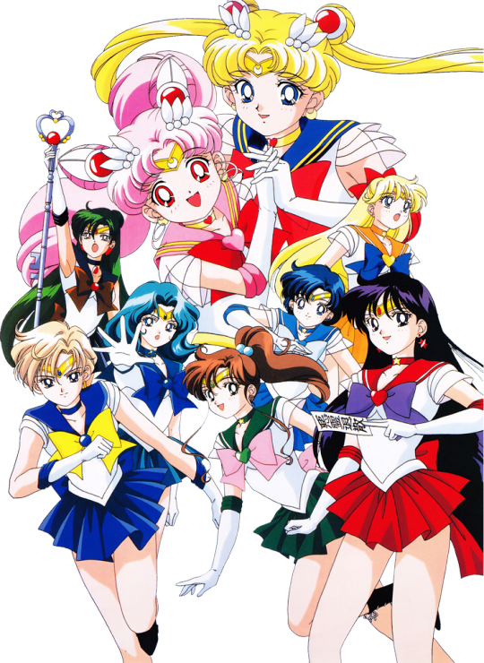

Что такое Сейлор-мун?
Сейлор Мун (яп. 美少女戦士セーラームーン бисё:дзё сэнси сэ:ра: му:н, дословный перевод: «Прекрасная воительница Сейлор Мун») — название японской франшизы, созданной Наоко Такэути. Обычно ей приписывают популяризацию концепции команды девочек-волшебниц — так же, как и вообще «оживление» жанра махо-сёдзё. Данное аниме было признано журналом Animage лучшим аниме 1993 года. В том же году один из персонажей сериала, Ами Мидзуно, была признана лучшим женским персонажем года.
Сюжет различных произведений метасерии вращается вокруг реинкарнированных защитников древнего королевства, когда-то охватывавшего всю Солнечную систему. Главные герои, называемые воинами в матросках (яп. セーラー戦士 сэ̄ра̄ сэнси, сейлор-воины), — молодые девушки, которые могут превращаться в героинь, названных в честь Луны (Сейлор Мун, от англ. Moon — «Луна») и планет Солнечной системы (Сейлор Меркурий, Сейлор Марс и т. д.). Использование слова Сейлор (от англ. sailor — «моряк; мореплаватель; матрос») в именах объясняется стилем их костюмов в морском стиле. Элементы фэнтези в серии глубоко символичны и часто основаны на мифологии.
Кроме манги была выпущена и другая продукция про Сейлор Воинов, включая популярное 200-серийное аниме, 26 постановок мюзиклов (более 800 представлений с 1993 по 2005 год), компьютерные игры и игровое кино (токусацу) сериал Pretty Guardian Sailor Moon. Также сериал оказал некоторое влияние на более поздние работы. Так, в честь персонажа сериала Сейлор Марс (Рэй Хино) была названа одна из главных героинь сериала «Евангелион» Рей Аянами[7].
In addition to the manga, other products about the Sailor Warriors were released, including a popular 200-episode anime, 26 productions of musicals (more than 800 performances from 1993 to 2005), computer games and a live-action film (tokusatsu) series Pretty Guardian Sailor Moon. The series also had some influence on later works. Thus, one of the main heroines of the Evangelion series, Rei Ayanami, was named after the character of the series Sailor Mars (Rei Hino).